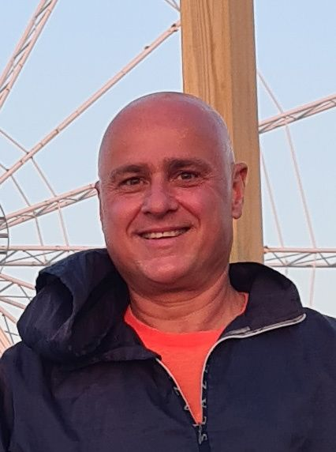

About

For years I was caught in the constraints of materialism and the pursuit of meaning, while always longing for the freedom to explore the world and everything it has to offer. Now I use my knowledge of technology to empower myself and others, and I use my art for reflection and social change.
My work deals with recyclability, the relationship between humans, technology and nature, the future of humanity, and education. Through 3D modelling, electronics, programming and artificial intelligence I try to bring that vision to life, and to foster a peaceful coexistence between the organic and the mechanical. My goal is to use my art and my voice to help make a better world, with a focus on nature conservation and holistic integration.
Selected work and experience
- 2024
- Not Alone, AI-driven installation, KABK graduation show
- 2023
- Internship at Monobanda, Utrecht: integrating AI and large language models into art practice and sound generation
- 2022
- Vester Alba Experientia, Koninklijke Bibliotheek / Open Digital Libraries
- 2022
- Darkness, Zend Festival, with Beeld en Geluid
- 2022
- Volunteer, Cinekid Medialab, Amsterdam
Education
- 2020–2024
- Interactive/Media/Design, Royal Academy of Art (KABK), The Hague
- 1992–1997
- BSc Engineering, Materials Science, Polytechnic University of Bucharest
Skills and tools
- Making
- Art installations, spatial design, prototypes, electronics, film, graphic design, HTML
- Software
- Adobe Suite, Blender, Unreal Engine, Substance Painter, ZBrush, Meshroom, MeshLab, COLMAP, Fusion 360
- Hardware
- Arduino, sensors and motors, Sony and Canon cameras, 3D printing and scanning, TIG/MIG welding
- AI
- Generative media pipelines, LLMs, Whisper, Stable Diffusion
- Languages
- English (advanced), Dutch (conversational)